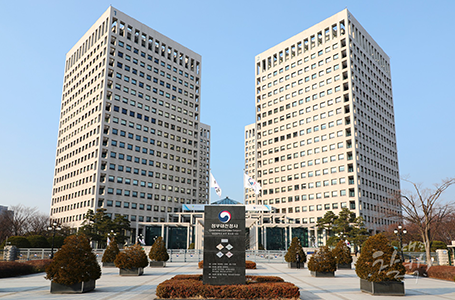
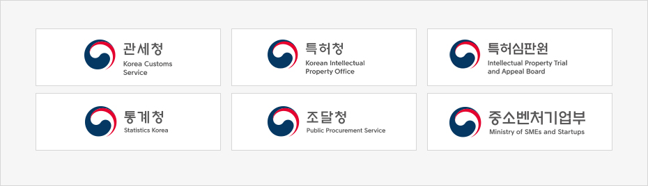
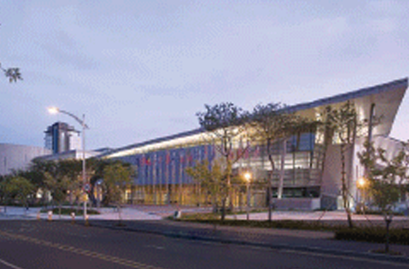
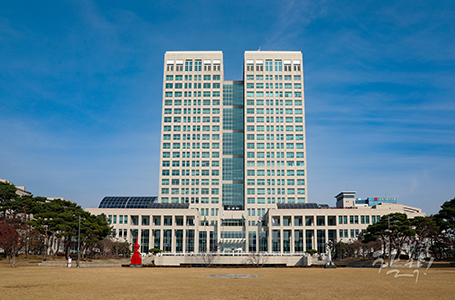

대한민국 행정의 중심
- Home
- 투자 강점
- 대한민국 행정의 중심
중앙행정 및 정부출연기관 세종시 이전 (57개)
-

정부대전청사
-
 정부세종청사
정부세종청사
중앙행정기관(42곳)
본부(22곳)
국무조정실, 국무총리비서실, 기획재정부, 공정거래위원회, 국토교통부, 해양수산부, 환경부, 농림축산식품부, 행정중심복합도시건설청, 보건복지부, 고용노동부, 국가보훈처, 교육부, 문화체육관광부, 산업통상자원부, 법제처, 국민권익위원회, 국세청, 인사혁신처, 행정안전부(재난안전관리본부), 소방청, 해양경찰청
소속기관(20곳)
조세심판원, 복권위원회, 중앙토지수용위원회, 항공·철도사고조사위원회, 중앙해양안전심판원, 중앙환경분쟁조정위원회, 정부청사관리본부, 중앙노동위원회, 최저임금위원회, 산업재해보상보험재심사위원회, 보훈심사위원회, 교원소청심사위원회, 해외문화홍보원, 경제자유구역기획단, 광업등록사무소, 무역위원회, 전기위원회, 우정사업본부, 한국정책방송원, 소청심사위원회



정부출연연구기관(15곳)
한국개발연구원, 한국법제연구원, 한국조세재정연구원, 경제·인문사회연구회, 한국교통연구원, 한국보건사회연구원, 한국직업능력개발원, 과학기술정책연구원, 대외경제정책연구원, 산업연구원, 한국노동연구원, 한국청소년정책연구원, 한국환경정책평가연구원, 국가과학기술연구회, 국토연구원중앙행정기관 밀집으로 신속한 기업지원 서비스 제공
기업 지원 중앙행정기관이 모두 있어 투지기업을 위한 각종 인·허가 등 ONE-STOP 서비스로 지원
-

DCC
-

대전시청
대전광역시 국제신용등급 평가
- '16년 일본 최고 국제 신용평가사 JCR 7년 연속 "A+"(안정적)
- '15년 무디스 신용등급 "Aa2"(총 21단계 신용등급 중 상위 3위에 해당)